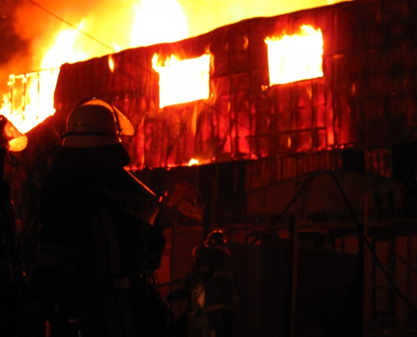

Con 38 años de experiencia cuenta la Nachtwache de la “Bomba Chile”, comenzando su historia en el mítico Cuartel Central de Avenida Cristóbal Colon 797, trasladándose luego a nuestro actual cuartel de Villa Independencia. En la Guardia Nocturna, permanece operativa una guardia nocturna compuesta por 12 voluntarios, divididos en dos grupos, una para acudir a emergencias tradicionales como incendios estructurales, forestales, inundaciones, entre otras; y otro para responder en caso de cualquier emergencia de la categoría rescate.
Los voluntarios ingresan a ella a las 23 horas para realizar vida de cuartel y luego descansar. De esta forma, la guardia se convierte en la segunda casa por un período de una semana, hasta que ingrese el próximo grupo. Cuatro grupos de 12 voluntarios son comandadas por un Voluntario a cargo, los cuales están bajo la supervisión de cada uno de los cuatro tenientes. Teniente Primero para la guardia 1, Segundo para la guardia 2, Tercero para la guardia 3, y el Teniente Cuarto para la guardia 4, en donde estas cuatro tienen que rotar cada Domingo por mes.
El personal que realiza esta labor cuenta con excelentes instalaciones que permiten una cómoda y grata permanencia en el cuartel, para estar en las mejores condiciones para acudir a los siniestros.
La sala de guardia nocturna cuenta con cuatro habitaciones completamente equipadas con baño independiente, sala de estar y cocina totalmente amoblada.
De esta manera operativamente podemos velar por nuestra comunidad brindando un efectivo servicio nocturno, con un rápido tiempo de respuesta para acudir a las emergencias.
